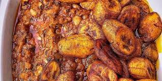

Red Red

DESCRIPION
Red Red is a very healthy and common Ghanaian local dish consumed by locals
in alomost every part of the country.
The meal consist of boiled beans in palm oiled tomato
sauce with slices of hot fried ripe plantain.
Red Red can be described as a balanced diet as
it contains nutrients of all the six food groups.
INGREDIENTS
- 1 cup dried beans
- 1/2 pound smoked fish
- 300ml palm oil
- salt
- peper
- tomatoes
- onions
- water
- ripe platain
- vegetable oil
STEPS
- Boil 1 cup of dried beans in 1L of water with 5g of salt in a stock pot with a tight fitting lid till it turns tender
- Heat palm oil in a frying pan.Add chopped onions
- Add tomatoe sauce to the frying pan and stir.
- Add washed and nicely chopped smoked fish and allow it to simmer for 2 to 3 minutes
- Pour contents of the frying pan into a stockpot.
- Add red pepper and an additional 1/2 – 1 cup water to stockpot.
- Simmer the stew for 20 minutes over low heat.
- Stir occasionally and add salt and pepper to taste.
- Serve with hot cooked rice and fried plantains.